응용지질기사 (2017-09-23 기출문제)
1과목: 암석학 및 광물학
1. 다음 변성암 중 석회암의 변성광화대와 가장 관계가 깊은 암석은?
- 규암 (quartzite)
- 혼펠스 (hornfels)
- 택타이트 (tactite)
- 슈도킬라이트 (pseudotachylite)
(정답률: 58%)

2. 현무암질 해양지각이 해구에서 섭입되는 과정에서 변성작용을 받으면 만들어지는 암석은?
- 규암
- 대리암
- 천매암
- 녹색편암
(정답률: 79%)
3. 화산암을 심성암과 구별하는데 이용하는 중요한 특징은?
- 화학성분
- 노출된 면적
- 암석의 색깔
- 입자의 크기
(정답률: 86%)
4. 고철질 내지 중성인 화산암에 기공이 많이 발달하고 유리질과 결정이 섞인 암석은?
- 분석 (cinder)
- 부석 (pumice)
- 진주암 (perlite)
- 흑요암 (obsidian)
(정답률: 62%)
5. 육안이나 돋보기로 화성암을 관찰할 때 광물 알갱이가 하나하나 구별되어 보이는 조직은?
- 유리질조직
- 반정질조직
- 비정질조직
- 현정질조직
(정답률: 87%)
6. 다음 암석 중 중성암은?
- 반려암 (gabbro)
- 섬록암 (diorite)
- 현무암 (basalt)
- 휘록암 (diabase)
(정답률: 87%)
7. 판의 섭입(subduction) 경계에서 나타나는 쌍변성대에서 해구와 호상열도에서 볼 수 있는 변성상을 바르게 나타낸 것은?
- 해구: 저온 고압, 호상열도: 고온 저압
- 해구: 저온 저압, 호상열도: 고온 고압
- 해구: 고온 고압, 호상열도: 저온 저압
- 해구: 고온 저압, 호상열도: 저온 고압
(정답률: 80%)
8. 다음 중 지질 시대의 유체의 이동 방향과 퇴적물의 기원지를 알 수 있는 고수류 연구에 주요 대상인 퇴적 구조는?
- 건열
- 화석
- 사층리
- 결핵체
(정답률: 86%)
9. 사암을 구성하는 모래입자의 입도(粒度)는?
- 2~1/16mm
- 2~1/32mm
- 4~1/32mm
- 1/16~1/128mm
(정답률: 77%)
10. 지층의 역전 여부나 상하를 판단할 수 있는 퇴적 구조로만 묶여진 것은?
- 층리, 편리
- 연흔, 건열
- 사층리, 엽리
- 엽리, 점이층리
(정답률: 71%)
11. 새로운 환경에 불안정한 광물상이 안정한 광물상으로 변화되는 지질학적 작용은?
- 퇴적작용
- 분화작용
- 교체작용
- 교대작용
(정답률: 76%)
12. 광물 내의 물 중 (OH)군으로 존재하는 것을 지칭하는 것은?
- 층간수
- 불석수
- 결정수
- 구조수
(정답률: 65%)
13. 강한 충격을 받은 광물에 생성된 불규칙하게 깨진 면의 모양은?
- 단구
- 벽개
- 열개
- 정벽
(정답률: 69%)
14. 정장석의 화학식으로 옳은 것은?
- CaAl2Si2O8
- NaAlSi3O8
- KAlSi2O6
- KAlSi3O8
(정답률: 77%)
15. 천이금속에 대한 설명으로 옳은 것은?
- Cr원소의 최고 산화상태는 +6이다.
- Ti 원소의 최고 산화상태는 +3이다.
- 천이금속들은 단 한가지의 산화상태를 보인다.
- 천이금속 중에서 가장 큰 산화상태는 족의 번호보다 1 큰 수이다.
(정답률: 56%)
16. 다음 중 쌍정의 생성원인과 관계없는 것은?
- 전이 쌍정
- 윤좌 쌍정
- 성장 쌍정
- 역학적 쌍정
(정답률: 77%)
17. 다음 그림과 같은 정사면체의 결정형에 포함되는 대칭요소가 아닌 것은?
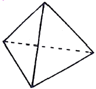
- 3회축
- 4회축
- 대칭면
- 4회 회반축
(정답률: 64%)
18. 장석에 대한 설명으로 옳지 않은 것은?
- 요업원료이다.
- Na나 K를 함유한다.
- 쪼개짐(clevage)이 없다.
- 두 가지 주요 형태(type)가 있다.
(정답률: 86%)
19. 변성암에서 온도와 압력에 따라 다르게 생성되는 Al2SiO5 조성의 광물이 고압환경의 변성암에서 발견되 수 있는 것은?
- 강옥 (corundum)
- 규선석 (sillimanite)
- 남정석 (kyanite)
- 홍주석 (andalusite)
(정답률: 55%)
20. 광물의 화학결합과 그에 해당하는 광물의 연결로 옳은 것은?
- 공유결합 - 형석
- 금속결합 - 백운모
- 이온결합 - 암염
- 잔류결합 - 금강석
(정답률: 87%)
2과목: 구조지질학
21. 층리면이 습곡되어 있을 때 축면엽리와 지층면이 만나서 형성된 지질구조는?
- 부딘 선구조 (boundinage lineation)
- 교차 선구조 (intersection lineation)
- 신장된 선구조 (elongation lineation)
- 파랑습곡 선구조 (creunlation lineation)
(정답률: 71%)
22. 다음 중 대규모 지진을 예측하는 데 사용되는 현상이 아닌 것은?
- 해일의 발생
- 소규모 지진
- 지하수위 변화
- 미량의 가스 방출
(정답률: 68%)
23. 지진파에 대한 설명으로 옳은 것은?
- P파는 고체만 통과할 수 있다.
- S파는 통과하는 물질의 형태를 일시적으로 변화시킨다.
- P파가 통과할 때 물질의 일시적인 체적변화는 발생하지 않는다.
- S파는 통과하는 물질의 체적과 밀도 변화를 일시적으로 일으킨다.
(정답률: 69%)
24. 다음 두 층의 주향과 경사를 투영한 하반구 입체 투영도에서 습곡축의 방향(trend)와 경사(plunge)는? (단, Plane 1: N70W 20SW, Plane 2: N50E 60SE)
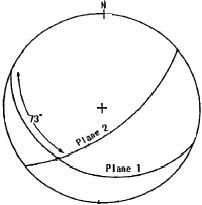
- S38W, 20°
- N45E, 73°
- N70W, 73°
- S70W, 20°
(정답률: 54%)
25. 다음 중 카르스트 지형과 가장 관련이 없는 지역은?
- 단양
- 영월
- 제천
- 춘천
(정답률: 83%)
26. 다음 중 우리나라에서 아직 확인되지 않은 지질시대의 지층의 시기는?
- 데본기
- 페름기
- 실루리아기
- 트라이아스기
(정답률: 74%)
27. 다음 중 주응력(principal stress, σ1, σ2, σ3)의 관계가 나타내는 응력장의 상태는? (단, 주응력의 관계는 σ1＞σ2=σ3=0 이다.)
- 정수압상태
- 일축압축상태
- 이축압축상태
- 삼축압축상태
(정답률: 82%)
28. 주향과 경사가 각각 N60E, 60SE와 N60W, 30SW인 두 면이 있을 때, 두 면이 만나는 교차선의 방향(trend)는?
- NE
- SE
- SW
- NW
(정답률: 57%)
29. 판구조론에서 말하는 판(plates)들의 경계선에 해당되지 않는 구조대는?
- 해구
- 변환단층
- 대양저산맥
- 빙하 퇴적층대
(정답률: 88%)
30. 아래 평면도의 단면도로서 옰은 것은?
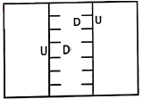
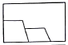
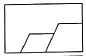
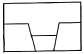
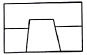
(정답률: 89%)
31. 다음 중 해양지각에서 대륙지각 쪽으로 갈수록 증가하는 성분은?
- Ca
- Fe
- K
- Mg
(정답률: 79%)
32. 다음 그림이 나타내는 단층의 생성과정은?
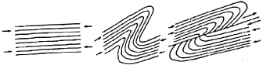
- 정단층
- 성장단층
- 점완단층
- 오버스러스트
(정답률: 90%)
33. 다음은 특정 지점에서의 하도 너비, 하도 깊이, 경사, 유석, 하구언까지의 거리를 측량하여 순서대로 나타낸 것이다. 하천의 유량이 가장 큰 지점은?
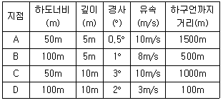
- A 지점
- B 지점
- C 지점
- D 지점
(정답률: 73%)
34. 전 세계적으로 지구역사상 최대 규모의 생물 멸종 현상이 일어난 시기는?
- 고생대 말
- 중생대 말
- 신생대 말
- 선캄브리아누대 말
(정답률: 79%)
35. Horst-Graben과 유사한 지구조 환경을 갖는 구조는?
- Thrust fault
- Transform fault
- Listric normal fault
- Positive flower structure
(정답률: 69%)
36. 돔(Dome)의 정의로 옳은 것은?
- 돌출된 지형에서 수평층의 분포를 나타내는 평면도
- 움푹 파여진 지형에서 수평층의 분포를 나타내는 평면도
- 중심에서 사방으로 경동하는 향사 (Doubly plunging syncline)
- 중심에서 사방으로 경동하는 배사 (Doubly plunging anticline)
(정답률: 76%)
37. 관측소에서 지진진동 분석 결과, P파의 계속 시간이 100초, P파의 속도가 10km/sec, S파의 속도가 5km/sec 일 때, 관측소에서 진앙까지의 거리는?
- 500km
- 1000km
- 1500km
- 2000km
(정답률: 68%)
38. 다음 압쇄암에 대한 설명 중 옳지 않은 것은?
- 지하 심부에서 형성된 단층암이다.
- 심한 재결정작용을 받아 형성된 암석으로 접촉변성암이다.
- 야외에서 관찰할 때 압쇄정도에 따라 마치 편마암이나 편암 같아 보이는 암석이다.
- 압쇄엽리를 가지며 압쇄된 정도에 따라 원압쇄암 (protomylonite), 압쇄암 (mylonite), 초압쇄암 (ultramylonite)으로 구분한다.
(정답률: 80%)
39. 습곡의 종류 중 성층면의 굴곡이 기하학적으로 동일한 모양을 나타내는 습곡은?
- 유사습곡 (similar fold)
- 평행습곡 (parallel fold)
- 경사습곡 (inclined fold)
- 동심습곡 (concentric fold)
(정답률: 70%)
40. 다음 암석 내 지질구조 중 2차 구조 (secondary structure)에 속하지 않는 것은?
- 편리 (schistosity)
- 역단층 (reverse fault)
- 사태성 구조 (slump structure)
- 연성 전단대 (ductile shear zone)
(정답률: 54%)
3과목: 탐사공학
41. 물리탐사 자료획득과정에서 반복측정에 의한 중합(stacking)과 신호대 잡음(S/N) 비의 관계를 가장 올바르게 설명한 것은?
- 중합회수가 N일 경우 신호대 잡음비는 log N배 커진다.
- 신호가 잡음 수준에 비하여 클 경우 신호대 잡음비가 커진다.
- 잡음이 일관성 잡음 (coherent noise)일 경우 신호대 잡음비가 커진다.
- 신호대 잡음비는 중합과 무관하며 송신신호의 크기에 의해 좌우된다.
(정답률: 69%)
42. 다음 중 방사능 탐사 시 주로 이용되는 성분은?
- α-선
- β-선
- γ-선
- X-선
(정답률: 85%)
43. 점토 광물이나 금속원소의 침전 및 퇴적이 가장 많이 이루어지는 토양층은?
- A층
- A1층
- B층
- C층
(정답률: 84%)
44. 중력을 직접 측정하거나 상대적인 중력값의 차이를 측정하는 방법이 아닌 것은?
- 지오프루부(geoprobe)
- 단진자 (pendulum) 측정법
- 낙하체(falling-body) 방법
- 워든 중력계(Worden gravimeter)
(정답률: 62%)
45. 원자핵의 자연붕괴에 관한 설명 중 옳은 것은?
- α입자가 방출되면 질량이 4 감소한다.
- γ선이 방충되면 핵의 전하가 1 감소한다.
- β입자가 방출되면 핵의 전하가 1 감소한다.
- α입자가 방출되면 핵의 전하가 2 증가한다.
(정답률: 66%)
46. 지하 투과 레이더(GPR) 탐사 자료의 해석을 위한 처리과정은 어느 탐사의 자료 처리과정과 가장 유사한가?
- 중력 탐사
- 전기 비저항 탐사
- 굴절법 탄성파 탐사
- 반사법 탄성파 탐사
(정답률: 63%)
47. 탄성파에 대한 설명으로 옳지 않은 것은?
- 지각은 완전한 탄성체가 아니므로 탄성파는 전파에 따라 감쇠가 일어나는데, 이를 분산 방정식으로 표현할 수 있다.
- 탄성파는 지구내부를 전파하는 실체파로서, P파 및 S파가 있으며 지구표면을 따라 전파하는 표면파로는 레일리파 및 러브파가 있다.
- 지진의 발생 매커니즘은 샌안드레아스 단층의 변위고찰에 의한 탄성반발설로 설명할 수 있는데 이 이론은 심발지진의 경우 설명이 곤란한 점이 있다.
- 지구 표면을 따라 전파하는 표면파는 실체파의 구형발산과 달리 원통형으로 발산하므로 동일한 전파 거리에 따른 단위면적당 에너지 감쇠 비율은 실체파보다 작다.
(정답률: 46%)
48. 다음 ( )안의 내용을 옳은 것은?
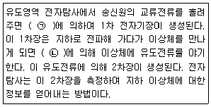
- ㉠ 오옴의 법칙 ㉡ 전하량 보존의 법칙
- ㉠ 암페어의 법칙 ㉡ 오옴의 법칙
- ㉠ 패러데이의 법칙 ㉡ 전하량 보존의 법칙
- ㉠ 암페어의 법칙 ㉡ 패러데이의 법칙
(정답률: 79%)
49. 광상의 종류에 따른 지시원소 관계로 옳지 않은 것은?
- As = Au - Ag 광상
- Zn = Pb - Cu - W 광상
- Hg = Pb - Zn - Ag 광상
- B = Sn - W - Be - Mo 광상
(정답률: 56%)
50. 지자기장의 요소들 간에 관계식으로 옳지 않은 것은? (단, D=편각, I=복각, H=지자기장의 수평성분, Z=지자기장의 수직 성분, T=총자기이다.)
- Z=TsinI
- H=TcosI
- tanI= Z/H
- T=(H2+Z2)2
(정답률: 64%)
51. 지층 A, B의 전파속도와 밀도가 다음과 같을 때, 두 지층의 경계면에서의 탄성파 반사계수는? (단, 탄성파는 수직으로 입사되었다고 가정한다.)
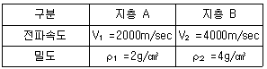
- 0.3
- 0.6
- 0.9
- 1.2
(정답률: 67%)
52. 신틸레이션 미터(scintillation meter)에서 가장 많이 사용되는 감마(γ)선 검출 결정은?
- Al
- Ge
- NaI
- SiO2
(정답률: 85%)
53. 자력탐사에 대한 설명으로 옳지 않은 것은?
- Flux-gate 자력계는 강자성체를 이용한다.
- 외부 자기장이 없을 경우 반자성 물질의 자성효과는 나타나지 않는다.
- 자력탐사는 매질의 대자율의 변화에 기인하여 시간에 따라 일정하나 위치에 따라 달라지는 지구자기장 값을 이용한 탐사이다.
- 등온 잔류 자화란 일정한 온도 하에서 짧은 시간동안 존재하다가 없어지는 외부 자기장에 의하여 암석이 잔류자기를 얻게 되는 현상이다.
(정답률: 53%)
54. 다음 중 지질학적 전기 단위로 옳지 않은 것은?
- 종 컨덕턴스: mS
- 횡 저항: ohm-m
- 종 비저항: ohm-m
- 횡 비저항: ohm-m
(정답률: 70%)
55. 지구자기장의 세 가지 요소가 아닌 것은?
- 복각
- 편각
- 진북
- 총자기장
(정답률: 67%)
56. 물리검층에 대한 설명 중 옳지 않은 것은?
- 전기 검층, 방사능 검층, 음파 검층 등이 물리 검층에 속한다.
- 유도분극 검층은 전기비저항 검층과 동시에 실시하며 시추공 주변의 탄성파 속도 조사에 유용하다.
- 자연전위(self-potential:SP) 검층은 사암 등과 같은 투수성지층을 판별하고 이들과 셰일 층과의 경계를 측정하는 데 응용된다.
- 지층의 각종 성질을 본래 상태에 가깝게 나타내어주므로 시추작업이나 시료분석에서 얻어지는 검층기록과 달리 지층을 정량적으로 분석하는 데 유용한 정보를 제공한다.
(정답률: 64%)
57. 지층의 기반암조사(基盤岩調査)에 주로 사용되는 탐사법은?
- 자력탐사
- 중력탐사
- 방사능탐사
- 굴절법 탄성파탐사
(정답률: 74%)
58. 잔류자기에 대한 설명으로 옳지 않은 것은?
- 잔류자기의 강도는 화성암이나 열변성 작용을 받은 변성암류에서 높고 퇴적암에서 낮다.
- 콜로이드 상태의 세립질 물질이 퇴적되면서 잔류자그를 얻게 되는 현상을 화학잔류자화라고 한다.
- 일정한 온도 하에서 짧은 시간동안 존재하다가 없어지는 외부자기장에 의하여 암석이 잔류자기를 얻게 되는 현상을 등온잔류자화라고 한다.
- 자성물질이 높은 온도로부터 큐리온도를 거쳐 서서히 식어갈 때 외부자기장에 의해서 강하고 안정된 잔류자기를 얻게 되는 현상을 열잔류자화라고 한다.
(정답률: 74%)
59. 자유롭게 매달아 놓은 자침은 총자기장의 방향을 가리키게 되는데, 자기 북극과 자기 적도에서의 복각을 나타낸 것으로 옳은 것은?
- 자기 북극 90°, 자기 적도 0°
- 자기 북극 9°, 자기 적도 90°
- 자기 북극 45°, 자기 적도 45°
- 자기 북극 30°, 자기 적도 60°
(정답률: 80%)
60. 유전상수가 9, 전기전도도가 1mS/m인 어느 매질에서의 전자파 전달속도는? (단, 진공에서의 전자파 속도는 0.3m/ns)
- 0.1 m/ns
- 0.3 m/ns
- 0.9 m/ns
- 1.2m/ns
(정답률: 39%)
4과목: 지질공학
61. 다음 중 카르스트 지형에서 나타나는 대표적인 지질 공학적 문제로 옳지 않은 것은?
- 지하수의 오염과 고갈
- 차별침식에 따른 불규칙한 기반암 깊이
- 석회공동 및 싱크홀 등 용식구조의 발달
- 터널굴착 시 터널 바닥부 융기현상 발생
(정답률: 72%)
62. 다음 중 현장에서 이루어지는 시험법에 해당하지 않는 것은?
- 수압파쇄시험
- 평판재하시험
- 표준관입시험
- 슬레이크내구성시험
(정답률: 74%)
63. 흙의 상대밀도에 관한 설명으로 옳지 않은 것은?
- 상대밀도가 낮은 흙에 진동을 가하면 다짐이 많이 발생한다.
- 매우 느슨한 상태로 존재하는 경우 상대밀도는 0에 가깝다.
- 상대밀도를 계산하기 위해서는 자연상태에 있는 흙의 간극비만 알면 된다.
- 매우 촘촘한 상태로 존재하는 경우 상대밀도는 1에 가깝다.
(정답률: 73%)
64. 불연속면의 공학적 특성을 파악하기 위한 조사 요소가 아닌 것은?
- 거칠기
- 방향성
- 암반의 종류
- 불연속면의 강도
(정답률: 64%)
65. 아래와 같은 조건의 지반에 설치한 폭 1m, 길이 20m, 깊이 1.5m의 연속기초의 극한 지지력은? (단, Terzaghi의 공식을 이용하여 계산하며, 소수점 둘째자리에서 반올림한다.)
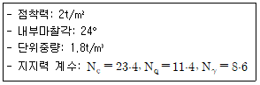
- 75.3t/m2
- 85.3t/m2
- 95.3t/m2
- 1⑤.3t/m2
(정답률: 42%)
66. 흙이 반고체에서 소성상태로 변하는 경계의 함수비를 무엇이라 하는가?
- 액성한계
- 소성한계
- 수축한계
- 점성한계
(정답률: 83%)
67. 다음 그림과 같은 토양 컬럼실험에서 지점 C와 지점 D에서의 전수두 (total head)를 올바르게 나타낸 것은?
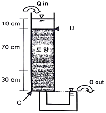
- 지점 C: 0cm, 지점 D: 10cm
- 지점 C: 0cm, 지점 D: 110cm
- 지점 C: 100cm, 지점 D: 110cm
- 지점 C: 110cm, 지점 D: 10cm
(정답률: 53%)
68. 다음 중 지하수 및 투수계수에 대한 설명으로 옳지 않은 것은?
- 입경이 증가할수록 투수계수는 감소한다.
- 지하수 유출지역은 지형적으로 낮은 장소이다.
- 입경의 표준편차가 클수록 투수계수는 감소한다.
- 지하수 유동이 없는 곳에서 지하수면은 평평하다.
(정답률: 73%)
69. 200번체 통과량이 5% 미만이며 SW의 기준과는 일치하지 않을 때의 분류 기호는? (단, 흙의 통일분류법을 기준으로 한다.)
- SC
- SM
- SP
- SL
(정답률: 63%)
70. 어느 토양 시료의 투수계수를 측정하기 위해 정수구 투수시험을 하였다. 사용된 토양 시료의 단면적은 78.5cm2, 토양 시료의 길이는 23cm, 수두(head)를 4.3cm로 일정하게 유지하였을 때 수량이 1.32cm3/s로 집수되었다면 이 토양 시료의 투수계수 K(cm/sec)는?
- 9.00x10-2cm/sec
- 3.14x10-2cm/sec
- 9.00x10-3cm/sec
- 3.14x10-3cm/sec
(정답률: 54%)
71. 지하수위가 높은 점성질 세립사층에 표준관입 시험을 실시한 경과 N값이 27이었을 때, 이를 보정한 보정치 N값은?
- 21
- 25
- 29
- 33
(정답률: 59%)
72. 다음의 거칠기 상수를 닺는 절리 중 가장 거친 절리면을 갖는 것은?
- 5
- 10
- 15
- 20
(정답률: 79%)
73. 압밀의 진행정도를 표시하는 압밀도를 계산하기 위해 필요한 값은?
- 과압밀비
- 압밀하중
- 초기 침하량
- 초기 과잉간극수압
(정답률: 54%)
74. 암반 분류법인 RMR과 Q 시스템에 대한 설명으로 옳지 않은 것은?
- RMR은 굴착막장의 자립시간을 제시하고 있다.
- Q 시스템이 RMR 분류법보다 지보대책이 다양하다.
- 두 방법 모두 불연속면의 방향성에 대한 보정이 필요하다.
- Q 시스템은 지보의 필요성을 공동의 크기와 관련하여 판정한다.
(정답률: 66%)
75. 산사태의 발생요인 중 직접적으로 작용하지 않는 것은?
- 강우
- 지진
- 지질구소
- 암석의 압축강도
(정답률: 71%)
76. 주상절리가 발단된 암반사면에서 발생되기 쉬운 파괴형태는?
- 원호파괴
- 쐐기파괴
- 전도파괴
- 평면파괴
(정답률: 68%)
77. 불연속면의 주향과 경사에 대한 설명으로 옳지 않은 것은?
- 주향은 북을 기준으로 하여 표시한다.
- 주향과 진경사의 방향은 항상 직각이다.
- 주향은 불연속면과 수평면의 교선의 방향을 이르는 말이다.
- 진경사는 불연속면과 수평면이 이루는 각이 최대인 둔각은 말한다.
(정답률: 74%)
78. 자하공동 시공을 위한 지질조사 시 각 단계에 따른 조사 방법으로 옳지 않은 것은?
- 시공단게 - 조사갱 조사
- 계획 초기단계 - 기존 자료 조사
- 계획 중간단계 - 지표 지질 조사
- 계획 최종단계 - 원위치 암반시험
(정답률: 71%)
79. 다음 흙의 밀도 중 가장 작은 값을 갖는 것은?
- 건조밀도
- 수중밀도
- 습윤밀도
- 포화밀도
(정답률: 66%)
80. 그림과 같은 구조물에 유선망을 그렸을 때, 최고등수두선과 최저 등수두선 간의 전수두 차이는?
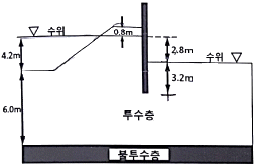
- 2.8m
- 3.2m
- 3.6m
- 4.2m
(정답률: 72%)
5과목: 광상학
81. 두 지층사이의 관계가 부정합인지 아닌지를 확인하는 조사사항 중 적당하지 않은 것은?
- 지층사이에서 역암을 찾으려고 한다.
- 두 지층의 주향과 경사를 세밀히 측정한다.
- 두 지층을 구성하는 입자 크기를 비교해 본다.
- 두 지층 속에 들어있는 화석으로 시간관계를 알아본다.
(정답률: 63%)
82. 지진의 발생 원인으로 가장 거리가 먼 것은?
- 심한 단층작용
- 지하동굴의 함몰
- 마그마의 급격한 팽창
- 풍성퇴적물의 급격한 이동
(정답률: 80%)
83. 작은 광맥들이 서로 교차하면서 그물 모양으로 얽혀있는 광맥은?
- 단성광맥
- 망상광맥
- 복성광맥
- 수지상 광맥
(정답률: 80%)
84. 반암동(Porphyry Copper) 광상과 관계가 없는 광산은?
- 일본 히시카리 광산
- 필리핀 레판토 광산
- 칠레 엘살바도르 광산
- 미국 산 마누엘-칼라마주 광산
(정답률: 52%)
85. 다음 중 퇴적광상과 가장 관계가 깊은 것은?
- 괴상
- 반상
- 층상
- 섬유상
(정답률: 80%)
86. 반암형 광상은 산출되는 금속원소의 종류에 의해 크게 5가지로 구분된다. 다음 중 산출되는 금속 원소에 속하지 않는 것은?
- 금
- 은
- 구리
- 몰리브덴
(정답률: 58%)
87. 한반도의 대표적인 금은광산인 운산, 대동광산과 같이 제3기 이전의 화강암, 섬록암, 석영반암 및 섬록암 등의 관입암체에 수반되는 광맥광상에서 주로 관찰되는 주요 광물(유화광물 및 광석광물)이 아닌 것은?
- 자연금
- 중정석
- 유비철석
- 자류철석
(정답률: 31%)
88. 반암 몰리브덴(Mo)광상의 가장 일반적인 관계 화성암은?
- 반려암
- 화강암
- 화강섬록암
- 듀나이트(dunite)
(정답률: 52%)
89. 우리나라에서 가장 큰 규모의 고령토 산출상을 보이는 경상남도 하동 및 산청 지역 고령토의 주 구성광물은?
- 딕카이트
- 나크라이트
- 할로이사이트
- 카올리나이트
(정답률: 64%)
90. 때때로 품위가 높은 합금맥을 형성하는 알래스카이트(Alaskite) 암맥은 어떤 암석의 변종인가?
- 섬장암
- 안산암
- 유문암
- 화강암
(정답률: 54%)
91. 금속광산에서 경제성 있는 금속광물의 주된 산상들로 올바르게 짝지어진 것은?
- 황화광물-산화광물
- 산화광물-규산염광물
- 황화광물-규산염광물
- 규산염광물-탄산염광물
(정답률: 53%)
92. 우리나라 서해안과 같이 굴곡이 많고 섬이 많은 해안은?
- 융기해안
- 함몰해안
- 피오르드 해안
- 리아스식 해안
(정답률: 85%)
93. 다음 중 견운모 변질대의 광물조합으로 옳은 것은?
- 석영-견운모-황철석-휘석
- 석영-견운모-자철석-각섬석
- 석영-견운모-황철석-녹니석
- 석영-견운모-휘수연석-녹니석
(정답률: 55%)
94. 우리나라 우라늄광상의 유형에 해당하지 않는 것은?
- 고생대 퇴적광상
- 중생대 함우라늄 열수광상
- 선캠브리아기 변성우라늄광상
- 선캠브리아기 함우라늄 페그마타이트광상
(정답률: 43%)
95. 다음 중 스카른(Skarn) 광물에 속하는 것은?
- 규회석, 석류석
- 방해석, 중정석
- 사장석, 정장석
- 흑운모, 감람석
(정답률: 77%)
96. 다음 중 우리나라에서 무연탄층이 제일 많이 협재되고 있는 지층은?
- 경상계
- 옥천계
- 조선계
- 평안계
(정답률: 66%)
97. 다음 중 암염, 석고가 속한 주요광상은?
- 기성광상
- 변성광상
- 접촉광상
- 퇴적광상
(정답률: 75%)
98. 평안계 지층에 대한 설명으로 옳지 않은 것은?
- 하부에는 약간의 해성층이 개재되어 있으나 대부분이 육성층에 속한다.
- 석회석 중에는 방추충의 화석이 발견되며 탄층상반에는 식물화석이 있다.
- 습곡과 단층에 의해 심히 교란되어 있고 다량의 화성암류의 관입을 받아 편암, 편마암으로 변성되어 있다.
- 여러 색의 사암, 셰일, 석회석 등으로 되어 있으며, 그 중하부에는 석탄층이 수층 협재되어 있다.
(정답률: 52%)
99. 페그마타이트 광상(pegmatite deposits)의 산출 특성은?
- 교대구조
- 대상구조
- 충식구조
- 층상구조
(정답률: 47%)
100. 제3기 지층의 분포면적이 대단히 협소한 우리나라에서 제3기 지층에 해당하는 것은?
- 묘곡층
- 장성층
- 서귀포층
- 회동리층
(정답률: 70%)